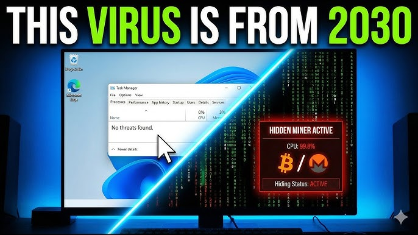

PRACTICAL LAB
Observing Malware Behavior (Safe Environment)
⚠️ "First, do no harm."
In this lab, we learn how to watch a predator without getting bitten.
DO NOT download real malware on your personal computer.
Running malicious code outside of a "Sandbox" can destroy your data and infect your entire home network.
Today we use only:
As a Security Technician, you must be able to spot the "Symptoms" of an infection.
Your goals for this lab:
We will now watch a controlled simulation of a Trojan infection.

🔍 What to Observe (The Checklist):
In the industry, we look for IOCs (Indicators of Compromise). These are the "digital footprints" left by the enemy.
AppData) or encrypted .tmp files.
This process is called Dynamic Analysis (analyzing code while it is running).
The instructor will now demonstrate three "Fake" malware scenarios:
.LOCKED and opens a Notepad "Ransom Note."log.txt file on the desktop.Students often think malware is a "ghost" in the machine. It isn't. It follows patterns.
The Standard Attack Pattern:
Based on the simulations you just watched, write a short "Incident Report":
"If you can describe it, you can defend against it."
You have moved from being a victim to being a Witness. You can now: